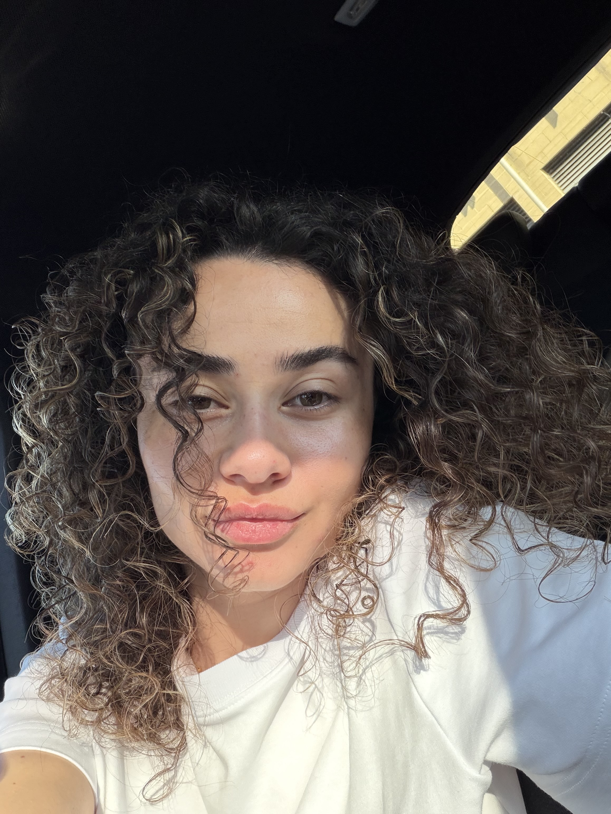

Computer Science& Web Development
Student crafting digital solutions with intetion and clarity.
I am currently studying BSc(Hons) Computer Science at the University of Hertfordshire.
View Selected Work→
About Me
My name is Sara Frasheri. I am passionate about technology and enjoy exploring how digital solutions can solve real-world problems through programming and problem-solving skills developed in my university studeis.
I focus strongly on understanding web accessibility and usability, how they work together on a website, and how to indentify errors building effective solutions during web development.